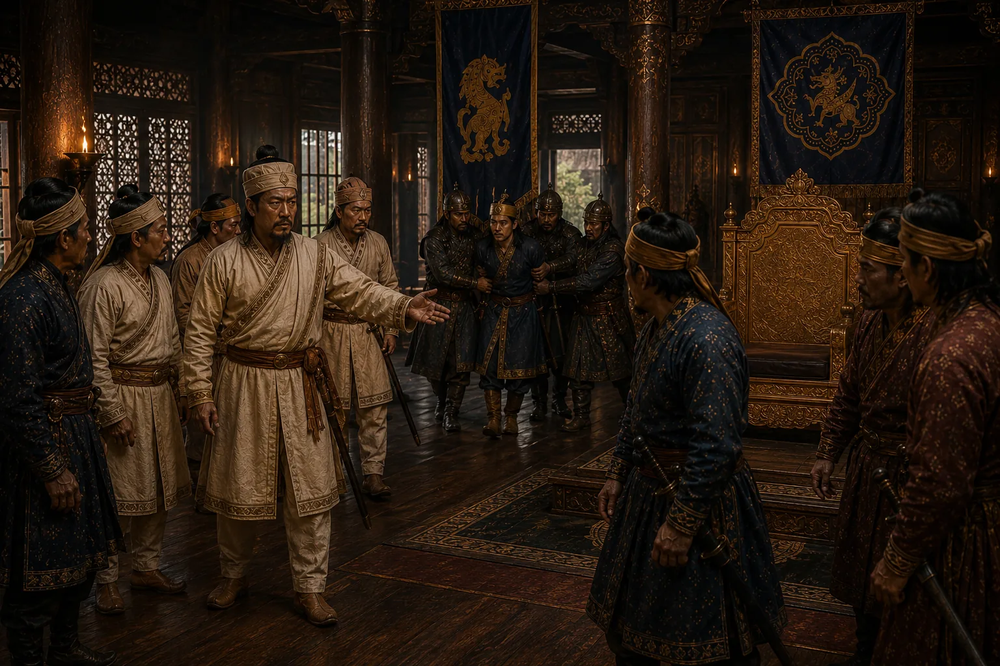

Atan Burhagohain Captures Garhgaon and Executes Debera and Gobar
1675 · Six kings in nine years

Atan Burhagohain leads an army of loyalist commanders from Guwahati to Garhgaon, arrests and executes Debera and deposes Gobar.
Sources have not yet been catalogued for this record.
People: Atan Burhagohain, Debera Borbarua, Gobar Roja